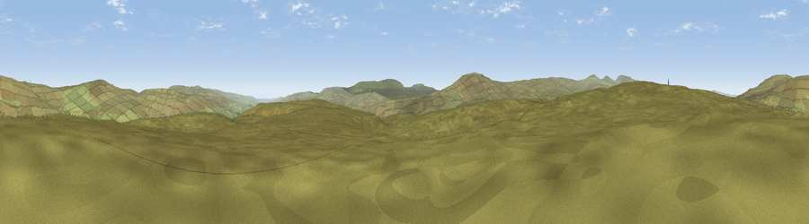

Viewpoint c10661_7591
#20982 in England · top 65% of its area beats it · — · open accessWhere it is
The exact computed spot (NY 79575 33075). Click the marker for map links.
Public access: this spot lies on mapped open-access land (CRoW Act 2000) — you may roam here on foot. Computed from Natural England's CRoW access layer and OpenStreetMap rights of way — not the legal definitive map. Always verify locally.
The view, rendered

A 360° render of this exact spot computed from the terrain model, tree cover and land cover — summer colours, afternoon light, calibrated against photographs of famous viewpoints. Real trees, hedges and buildings will differ in detail.
The panorama
Grey silhouette: terrain skyline in each direction (720 bearings, Earth curvature and refraction included). Dashed green: skyline with trees (+15 m) and buildings (+8 m) as obstacles. Blue strip: how far the ground is visible on each bearing.
Where the view opens
Wedge length = distance to the farthest visible ground on that bearing (vegetation-aware). Rings at 10, 25 and 50 km.
What fills the view
100% grassland
Angular shares of the visible panorama (visual magnitude), not map area. Landscape diversity 0.01 (0–1 Shannon).
Key numbers
More beautiful places nearby
The staircase of upgrades: each row has a higher view potential than everything closer. Driving times are estimates from straight-line distance, calibrated against real road routing — check an actual route before setting out.
| Place | Direction | Drive | Score |
|---|---|---|---|
| Viewpoint c10663_7581 | W · 1 km | ~2 min | 52.0 |
| Scaud Hill | N · 4 km | ~9 min | 56.1 |
| Viewpoint near Ireshopeburn | ENE · 4 km | ~9 min | 60.5 |
| Viewpoint near Wearhead | NE · 4 km | ~9 min | 66.5 |
| Meldon Hill | SSW · 5 km | ~10 min | 70.4 |
| Dead Stones | N · 7 km | ~14 min | 72.8 |
| Mickle Fell | S · 9 km | ~17 min | 75.8 |
| Great Dun Fell | W · 9 km | ~17 min | 77.8 |
54.69230, -2.31839 · source: screening · position refined by local search. Computed location — check access rights before visiting.